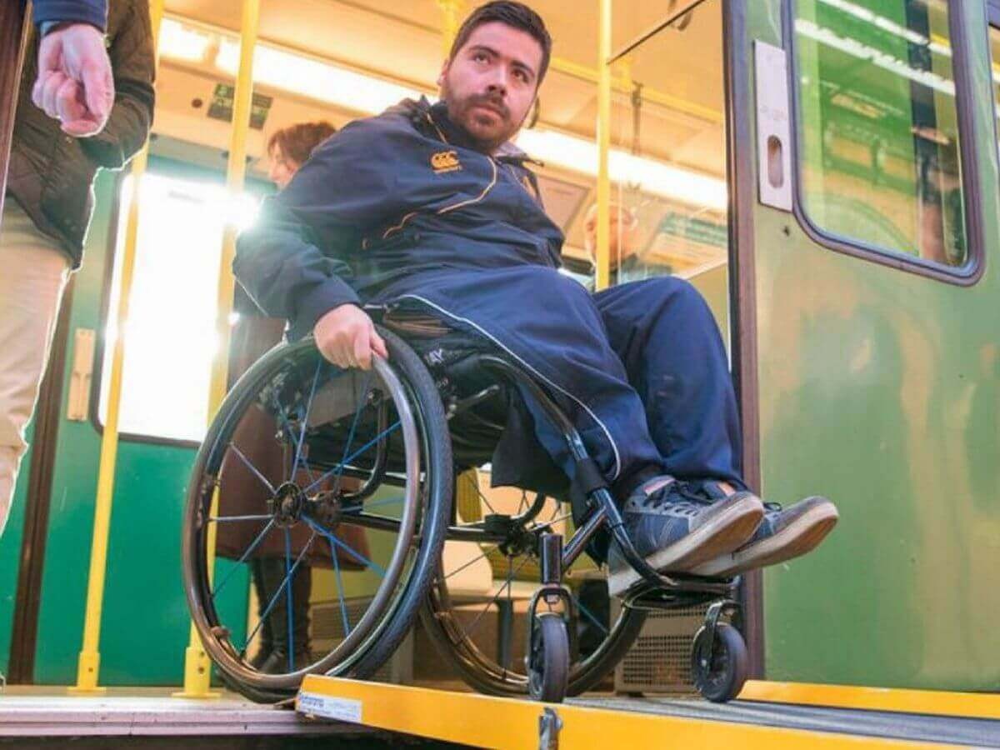
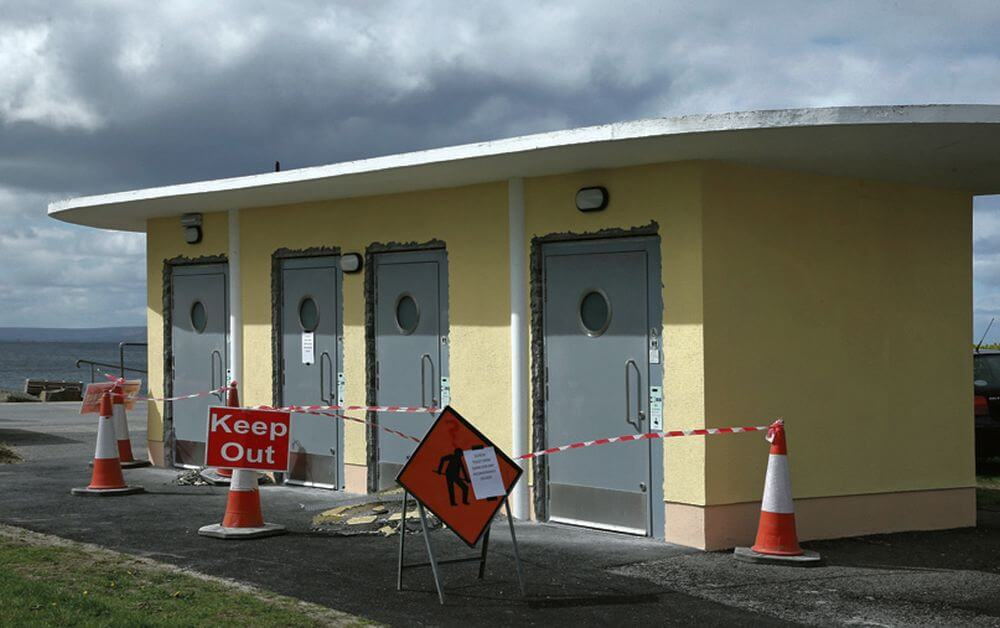

Possible Improvements
While Galway City has made great imrpovments towards accessability for everyone such as replacing the cobblestones with tarmac in many places, there are still a few glaring issues that could pose as problems for individuals with disabilities. The first issue some might encounter is with the train service. Iarnrod Eireann's website strongly suggests notifying them if an individual who is wheelchair bound or has any other sensory impairments is intending to travel with them, so that they can have staff there to assist them on the journey. If that is not inconvientent enough there is also the case of staff having to place metal ramps at the entrace to enter and leave the carraige as there is not a built-in ramp in many of the carriges.

Another issue would be the public bathrooms. Many of the disabled bathrooms in restraunts and other establishments are locked and you must ask a member of staff for a key, which can be inconveinent for some people. the state some of these bathrooms are left in is unacceptable and could be dangerous for some people. some establishments will just label the disabled bathrooms as "Out of order" instead of keeping them clean and safe for people to use.
